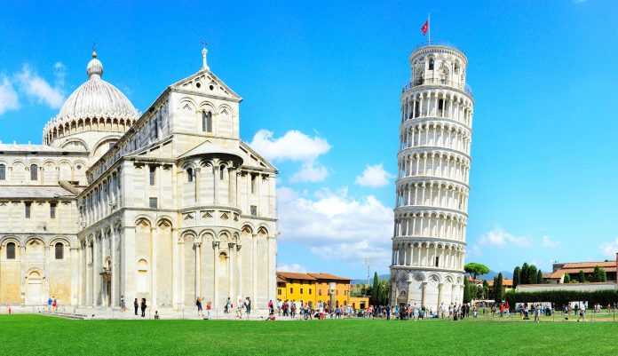
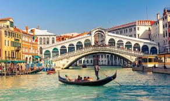
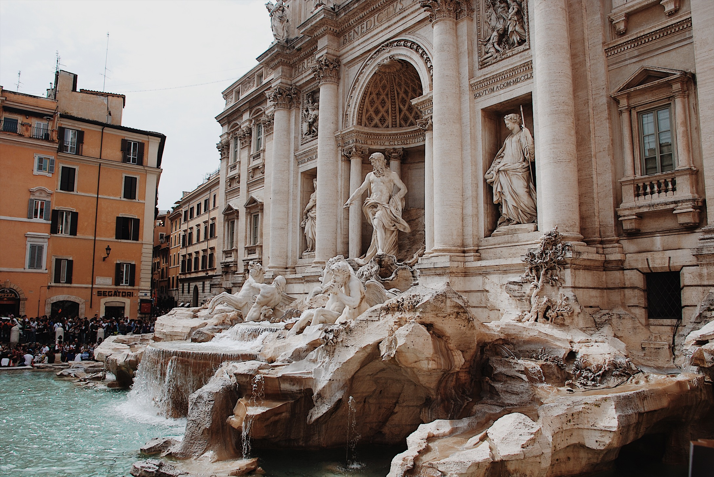
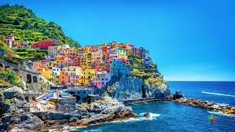
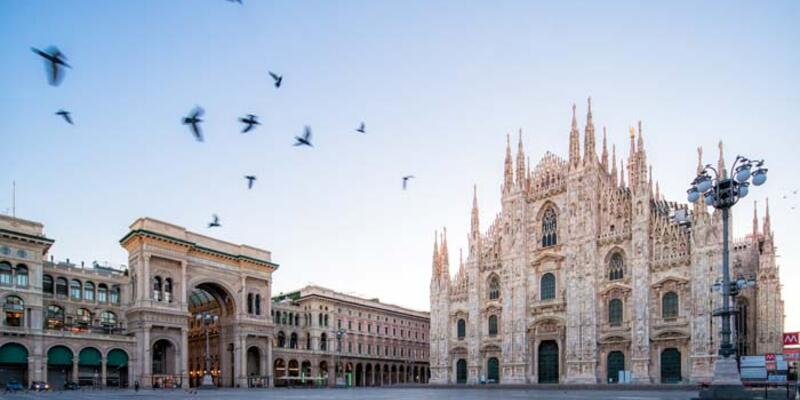

3-ITALY:





Why should you go to Italy??
1. Rome
is really no other city quite like Rome in the world. While Rome wants to be a modern 21st-century city, it is desperately trying to keep its historical ruins and monuments from crumbling. The city is really one large archaeological dig that continues to discover its 2,800 years of history.
2. Cinque Terre
While many people will argue that the Amalfi Coast should appear on this list, I could not resist placing the Cinque Terre region here in the number four spot. Virtually unknown to Americans twenty-five years ago, this beautiful coastal region of Italy is simply spectacular. Its five villages are all unique and connected by a network of trails that vary in difficulty and distance. And if hiking is not your thing, don’t despair— the local train connects all five villages, as does the local ferry system, except for Corniglia, which is perched high up on a cliff above the sea.
3. Food
A big part of the whole Italian experience is without a doubt the food. I’m not sure I’ve had a really bad meal in Italy and this includes stopping on the autostrada at rest stops for a quick bite. The different regions of Italy all have their own specialties but no matter where you are, you will find wonderful cuisine. And if you get an opportunity to have a home cooked meal you should jump at the chance, as these have been some of the finest meals we have ever had. Many of the agriturismos will host a dinner for their guests, so if the opportunity presents itself, take advantage of it.
4. People
Sometimes Italians get a bad rap for their impatience with tourists and their notoriety as the pickpocket capital of the world. I have personally experienced none of this and to be honest, I have found the people of Italy to be a warm and hospitable bunch. Don't get me wrong, there are unscrupulous types who will pick your pocket if the opportunity arises, but this can be said of almost any city. Just be sure to always be aware of your surroundings.
Our many great experiences with the locals are some of the most wonderful memories that we have. From the little Italian man who invited us into his home even though he spoke no English to show us his pictures of the local church that we were photographing, to Irene, the wonderful owner of a small trattoria in Cortina d’Ampezzo who absolutely made our day, we have had nothing but good experiences.
5. It Doesn’t Have to Break the Bank
Most people never consider a trip to Italy because they assume that it will be much too expensive. While travel in Europe in general can be expensive, it doesn't have to break the bank. There are a number of strategies you can use to help defray the cost. For starters, it is always cheaper to travel in the off season or at least the shoulder season. It you are traveling when everyone else is, then demand is high and you are going to pay top dollar.